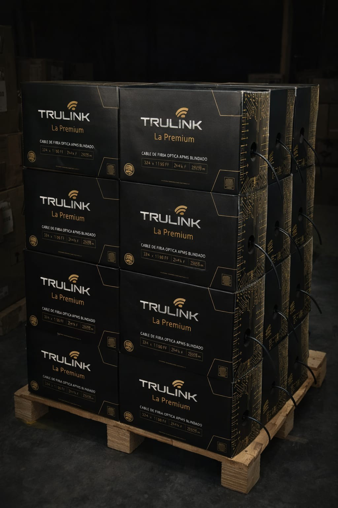
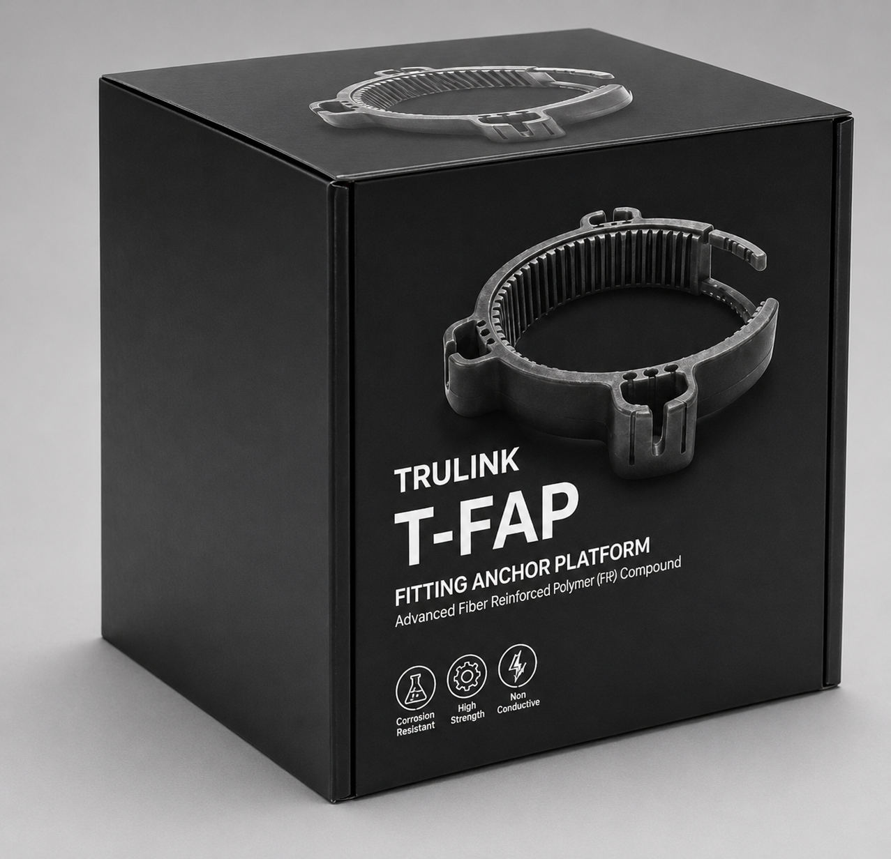
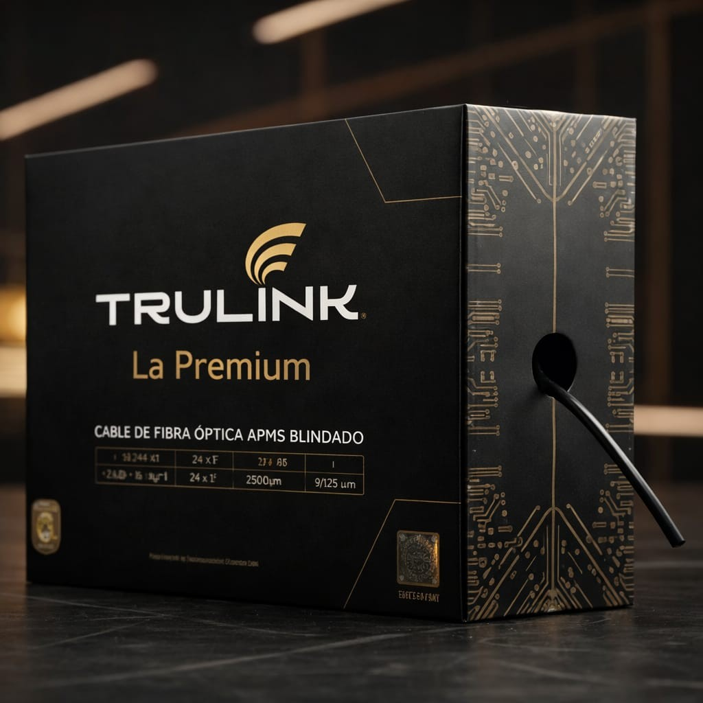
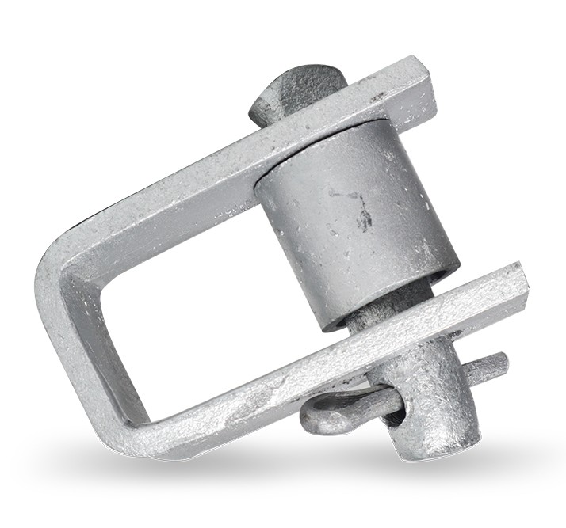
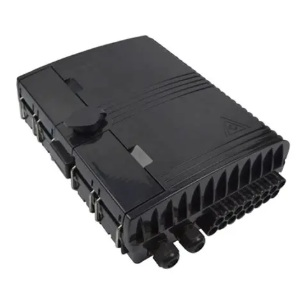

TRULINK FIBER LLC
5203 Juan Tabo Blvd Ne, Albuquerque, NM, 87111-2691, US
5203 Juan Tabo Blvd Ne, Albuquerque, NM, 87111-2691, US
 B2B PORTAL
B2B PORTAL
B2B PORTAL
B2B PORTAL
SOMOS una empresa de ingeniería y manufactura especializada en soluciones de fibra óptica y componentes de infraestructura digital para telecomunicaciones, redes corporativas y proyectos de expansión regional.
Con sede en Estados Unidos y operaciones logísticas en Panamá, Centroamérica, el Caribe y Colombia, TRULINK se posiciona como el único fabricante que ofrece fibra óptica para interiores en cajas de 305 metros, un formato diseñado para optimizar instalación, transporte y control de inventario en proyectos de mediana escala.
Producción directa en Shenzhen, China, bajo estándares ISO, con distribución hacia toda la región latinoamericana.

El T‑FAP™ es la innovación en desarrollo de TRULINK FIBER LLC para transformar la infraestructura de telecomunicaciones en Latinoamérica.
👉 Aunque aún está en desarrollo, el T‑FAP™ refleja nuestra visión de infraestructura eterna, sostenible y adaptada al futuro digital de la región.


En TRULINK FIBER LLC hemos desarrollado un formato exclusivo que responde a las necesidades reales de instaladores y operadores: cajas de fibra óptica para interiores de 305 metros.
👉 Este formato exclusivo refuerza nuestra visión de conectividad inteligente y logística disruptiva.
TRULINK FIBER LLC cuenta con un robusto hub logístico y operativo para toda la región.
Hub Logístico Central
Cobertura Total
Suministro Ágil
Presencia Estratégica
SOMOS una marca disruptiva que humaniza el negocio de la conectividad. Nuestra misión es cruzar fronteras para conectar personas y empresas de manera fácil y accesible, eliminando las barreras de precios y logística. Nuestro objetivo estratégico es llegar donde otros no han llegado, porque vemos más allá de los números: vemos personas, comunidades y realidades que merecen soluciones tecnológicas inclusivas.
Ser el referente latinoamericano en ingeniería de conectividad inteligente, liderando la manufactura local de soluciones de fibra óptica y herrajes sostenibles. Aspiramos a consolidar un hub regional en Panamá que impulse la innovación, la transferencia de conocimiento y la independencia tecnológica, posicionando a Trulink como un socio estratégico para gobiernos, operadores y comunidades en la transformación digital.



